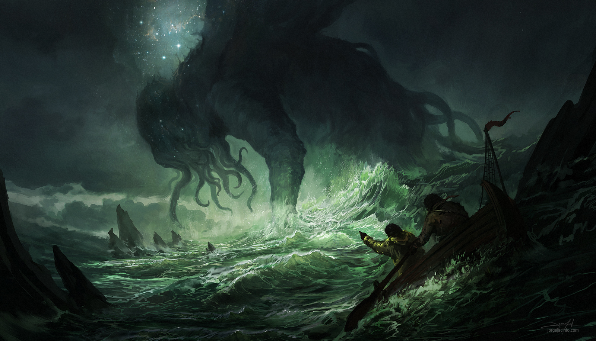
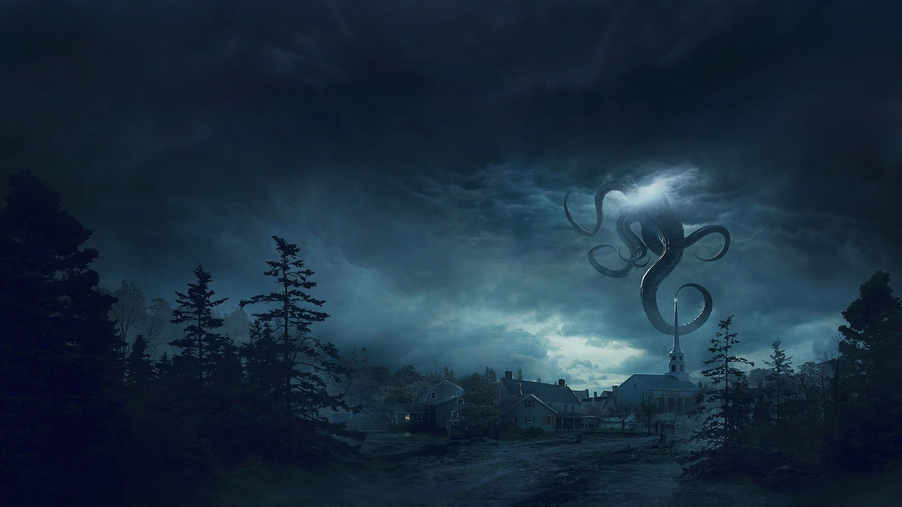
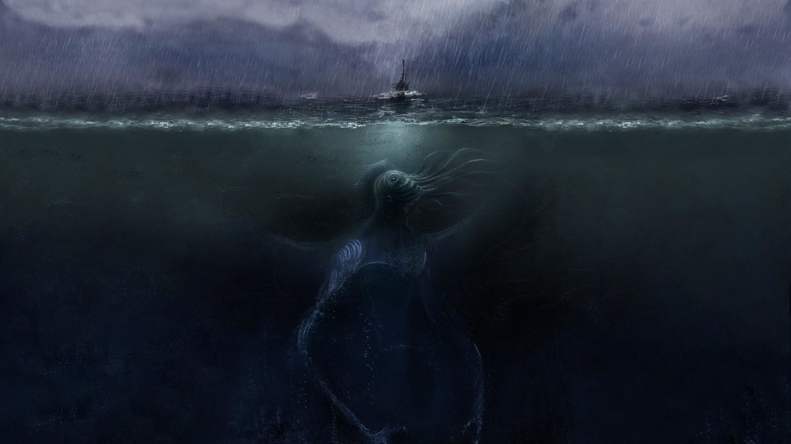
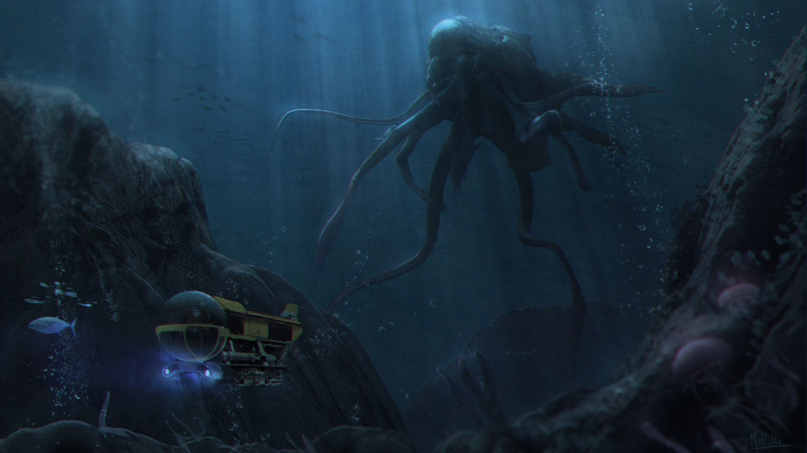
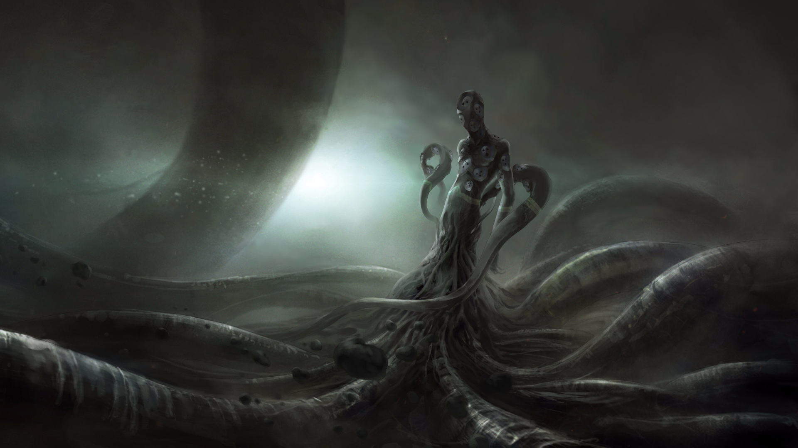

H. P. Lovecraft é um dos mais importantes romancistas do gênero de terror do mundo. Nascido na cidade de Providence, estado de Rhode Island, nos Estados Unidos, no dia 20 de agosto de 1890, Howard Phillips Lovecraft era o único filho do casal Winfield Scott Lovecraft e Sarah Susan Phillips. Seu pai era negociante de joias e metais preciosos e sua mãe era descendente dos primeiros colonizadores americanos.